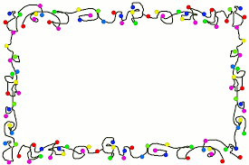
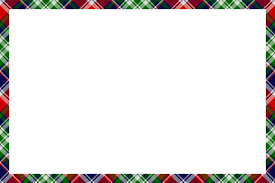

The border-image with round Property
Here, the middle sections of the image are repeated to create the border:
border-image: url(border.png) 40 round;
Here is the original image:

The border-image with slice Property
Here, the middle sections of the image are stretched to create the border:
border-image: url(border.png) 30 stretch;
Here is the original image:
